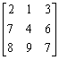
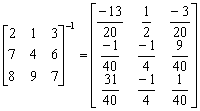

三階逆矩陣及行列式
程式參考了網友roviury意見進行修改。
這個版本的程式可以計算三階行列式、逆矩陣。若果輸入的數值為整數，答案會以分數形式表示，建議將計數機預先設定為假分數形式表示(按六次 Mode，再按 1 2 EXE )。
程式需要在 REG Quad 模式下執行，因此在輸入程式前請先按 Mode Mode 2 → 3 進入REG Quad模式。
注意: 藍色的英文字為統計模式中的變數(Σx3 按 Shift 1 → → 1，Σy 按 Shift 1 → 2，Σxy Shift 1 →3)，而3√是按shift x3。
第一個程式(可以顯示分數答案 158 bytes)
Stat clear: ?→M: 3√(M - 1 DT: ?→M: 1 , M DT: ?→M:
0 , M - Σy DT: ?→A: ?→B: ?→C: ?→X: ?→Y: ?→M:
Σx3BM + ΣxyCX + ΣyYA - YCΣx3 - AMΣxy - XBΣy◢ 1┘Ans→D:
D(BM - CY◢ D(YΣy - MΣxy◢ D(ΣxyC - ΣyB◢
D(CX - MA◢ D(MΣx3 - ΣyX◢ D(AΣy - CΣx3◢
D(YA - XB◢ D(ΣxyX - YΣx3◢ D(Σx3B - AΣxy
第二個程式(不顯示分數答案 157 bytes)
Stat clear: ?→M: 3√(M - 1 DT: ?→M: 1 , M DT: ?→M:
0 , M - Σy DT: ?→A: ?→B: ?→C: ?→X: ?→Y: ?→M:
Σx3BM + ΣxyCX + ΣyYA - YCΣx3 - AMΣxy - XBΣy◢ Ans-1→D:
D(BM - CY◢ D(YΣy - MΣxy◢ D(ΣxyC - ΣyB◢
D(CX - MA◢ D(MΣx3 - ΣyX◢ D(AΣy - CΣx3◢
D(YA - XB◢ D(ΣxyX - YΣx3◢ D(Σx3B - AΣxy
例題: 計算下列矩陣的逆矩陣。

按 Prog 1 再按 2 EXE 1 EXE 3 EXE 7 EXE 4 EXE 6 EXE
8 EXE 9 EXE 7 EXE (這時顯行列式的值 40) EXE
(顯示 -13/20) EXE (顯示 1/2) EXE (顯示 -3/20) EXE
(顯示 -1/40) EXE (顯示 -1/4) EXE (顯示 9/40) EXE
(顯示 31/40) EXE (顯示 -1/4) EXE (顯示 1/40)
因此，

計算完結後，請按Mode 1返回正常模式。
程式舊版
第一個程式(172 bytes，顯示分數答案)
Stat clear: ?→M: 3√(M - 1 DT: ?→M: 1 , M DT: ?→M:
0 , M - Σy DT: ?→A: ?→B: ?→C: ?→X: ?→Y: ?→M:
Σx3BM + ΣxyCX + ΣyYA - YCΣx3 - AMΣxy - XBΣy→D◢
(BM - CY)┘D◢ (YΣy - MΣxy)┘D◢ (ΣxyC - ΣyB)┘D◢
(CX - MA)┘D◢ (MΣx3 - ΣyX)┘D◢ (AΣy - CΣx3)┘D◢
(YA - XB)┘D◢ (ΣxyX - YΣx3)┘D◢ (Σx3B - AΣxy)┘D
第二個程式(163 bytes，不顯示分數答案)
Stat clear: ?→M: 3√(M - 1 DT: ?→M: 1 , M DT: ?→M:
0 , M - Σy DT: ?→A: ?→B: ?→C: ?→X: ?→Y: ?→M:
Σx3BM + ΣxyCX + ΣyYA - YCΣx3 - AMΣxy - XBΣy→D◢
D-1(BM - CY◢ D-1(YΣy - MΣxy◢ D-1(ΣxyC - ΣyB◢
D-1(CX - MA◢ D-1(MΣx3 - ΣyX◢ D-1(AΣy - CΣx3◢
D-1(YA - XB◢ D-1(ΣxyX - YΣx3◢ D-1(Σx3B - AΣxy